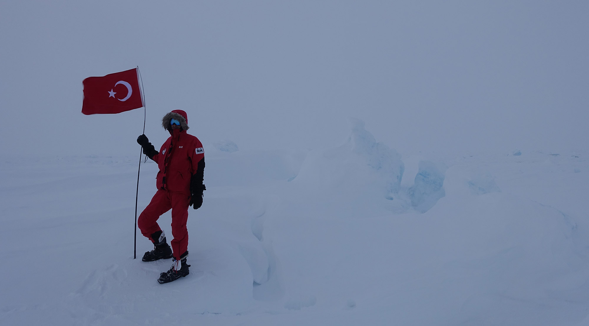
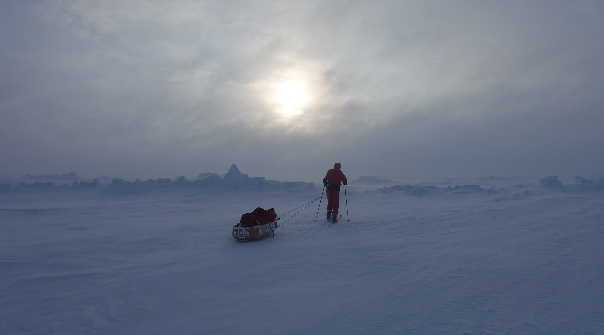
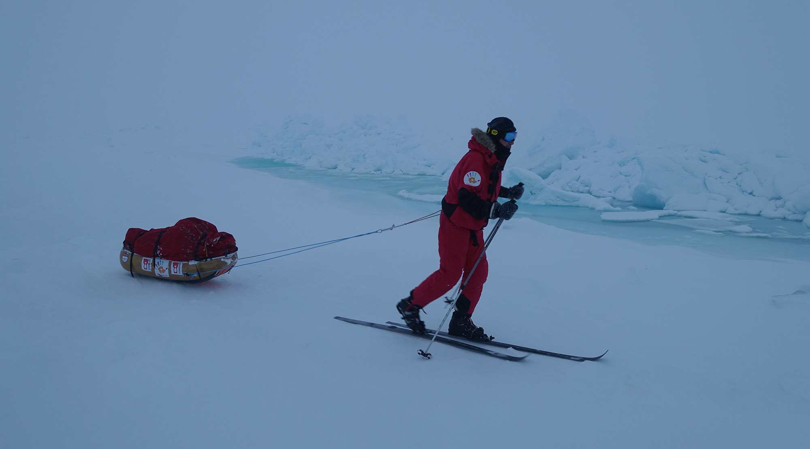
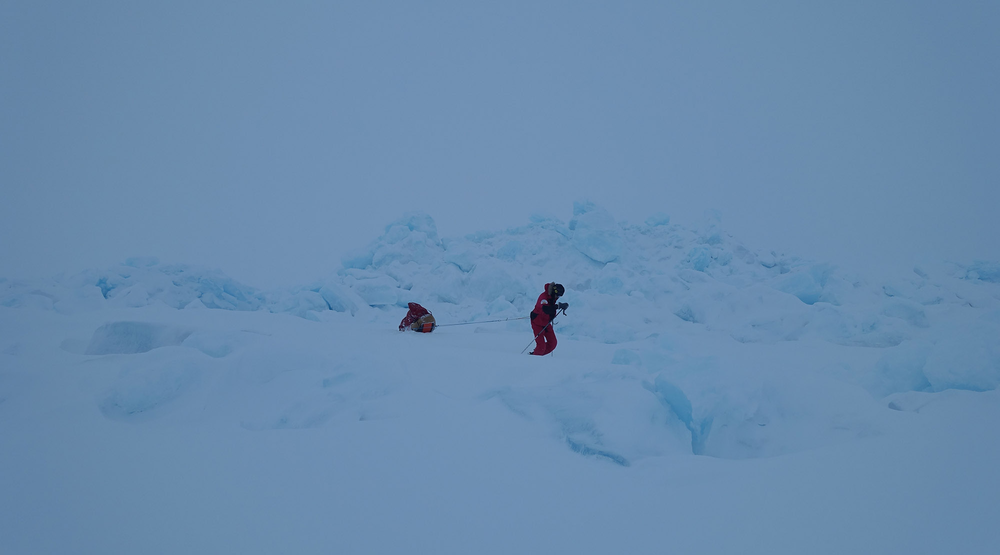
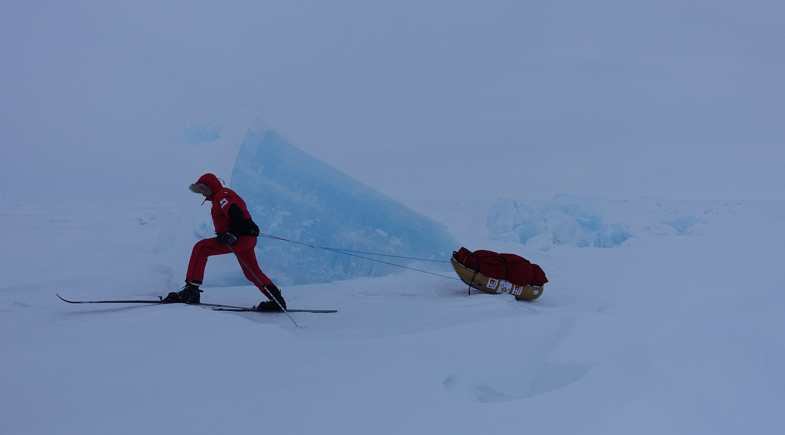

The Son Enlem expedition is a final degree trek on the polar ice cap. The goal is to walk with cross-country skis from 89° N to 90° N, the geographic North Pole. There are two of us on the expedition – Inge Solheim, an experienced and accomplished polar explorer from Norway and Burak Öymen, a first time polar adventurer from Turkey. This is Inge’s 18th trek to the North Pole. It is Burak’s first.
CLOSE